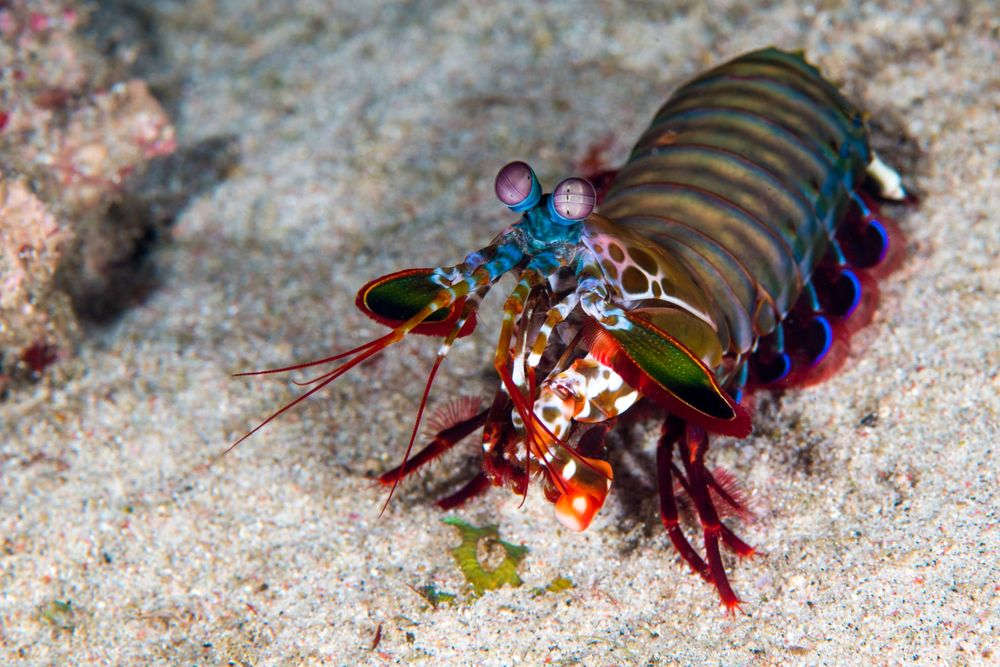

Fatos sobre o Stomatopoda
informações gerais
Nome Cientifico:Odontodactylus scyllarus
- Reino:Animalia
- Filo:Arthropoda
- Subfilo:Crustacea
- Classe:Malacostraca
- Subclasse:Hoplocarida
- Ordem:Stomatopoda
curiosidades
caçadas
A lagosta-boxeadora constroi túneis em forma de U, debaixo de substrato solto na base de recifes de corais, que podem chegar a ter 3 a 40 m de profundidade. É para este túnel que muitas vezes traz as presas que mata ou imobiliza. Captura preferencialmente gastrópodes, crustáceos e bivalves e esmurraça repetitivamente até ter acesso ao tecido mole para se alimentar. 
soco curioso
São capazes de enfiar um murro a uma velocidade superior aos 80 km/h. Este é o murro mais rápido anotado de qualquer animal existente, com mais de 1500 N de força. A superfície dos seus apêndices que desferem os punhos são cobertos com uma camada extremamente densa de hidroxiopatite, disposta de uma maneira muito resistente à possibilidade de fracturar.

Referencias bibliograficas
- https://www.fciencias.com/2016/02/12/lagosta-boxeadora-vida-em-destaque/
- https://www.ripleybelieves.com/img/environment-2018/mantis-shrimp-facts-animals-of-oceans.jpg
- https://figgysfoodtruck.com/img/mantis-shrimp-facts-3.jpg